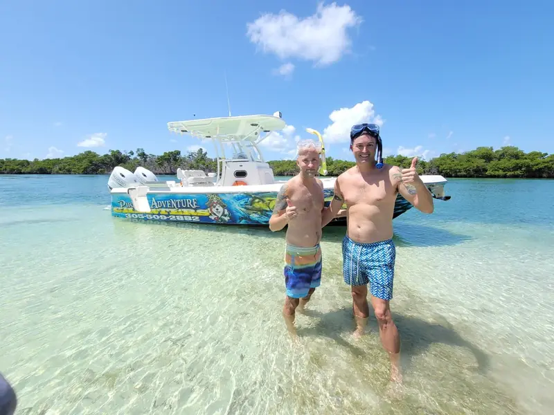
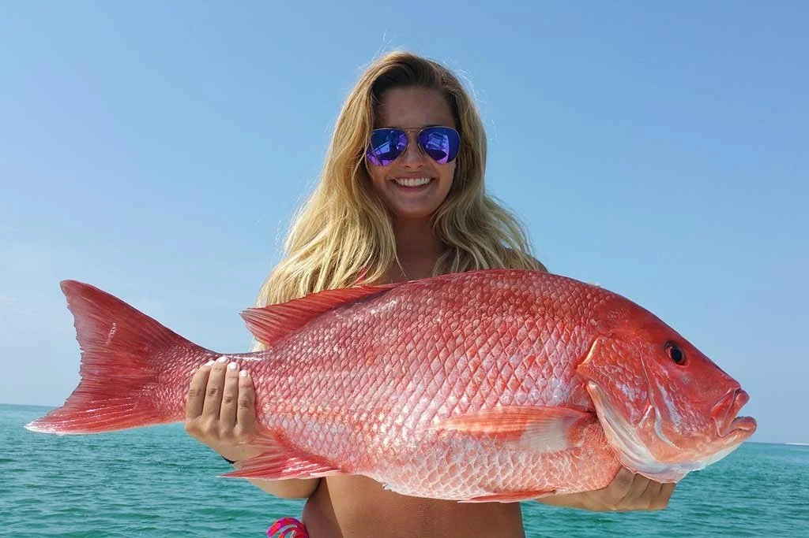
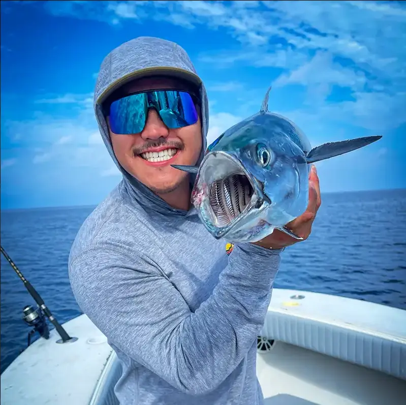

Fishing in Florida requires following strict regulations. The Florida Fish and Wildlife Conservation Commission (FWC) enforces these rules to protect our reefs and fish populations. Know them, follow them, and fish responsibly. Violations are expensive and serious.
Fishing License Requirements
Who needs a license? Anyone 16+ who fishes in Florida waters (salt or fresh) needs a valid fishing license.
Exceptions:
- Charter passengers. A licensed Key West charter carries a vessel license that covers every guest on board. You do not buy anything. This is the answer for almost every visitor.
- Anglers under 16.
- Florida residents 65 and over (with proof of age and residency), and Florida residents fishing from shore with the free shoreline license.
If you fish on your own (a rental boat, a kayak, a bridge), 2026 saltwater license prices from FWC:
- Non-resident 3-day: $17
- Non-resident 7-day: $30
- Non-resident annual: $47
- Florida resident annual: $17 (five-year $79)
- Spiny lobster permit, on top of the license: $5 a year
Buy online at GoOutdoorsFlorida.com or at any Keys tackle shop; the digital license on your phone is valid. Prices checked at myfwc.com, October 2026.
Captain Dane's Charters: License Included
Size and Bag Limits in the Keys (Atlantic rules, checked October 2026)
FWC applies Atlantic regulations to all state waters of Monroe County, on both the ocean and Gulf sides. These are the species Key West charters actually bring home, with the current FWC limits. Sizes are total length unless marked FL (fork length). Source: myfwc.com species pages and the FWC saltwater quick chart, checked October 2026. Rules change mid-year; your captain has the current sheet on board.
| Species | Min Size | Bag Limit (per person/day) | Season / Notes |
|---|---|---|---|
| Yellowtail Snapper | 12" | 10 (within 10-snapper aggregate) | Open year-round. The Keys staple. |
| Mangrove (Gray) Snapper | 10" | 5 (within aggregate) | Open year-round |
| Mutton Snapper | 18" | 5 (within aggregate) | Open year-round |
| Lane Snapper | 8" | 10 (within aggregate) | Open year-round |
| Hogfish | 16" FL | 1 | Open May 1 – Oct 31 only |
| Red Grouper | 20" | 3 (within 3-grouper aggregate) | Closed Jan 1 – Apr 30 |
| Black Grouper | 24" | 1 (only 1 gag or black) | Closed Jan 1 – Apr 30 |
| Gag Grouper | 24" | 1 (only 1 gag or black); vessel limit 2 | Short season; closed by FWC order from Aug 2, 2026. Check before targeting. |
| Nassau / Goliath Grouper | — | 0 | No harvest (Goliath only by FWC permit) |
| Mahi-Mahi | 20" FL | 5, up to 30 per private boat | Open year-round; captain and crew keep none |
| King Mackerel | 24" FL | 3 in Monroe County (2 elsewhere on the Atlantic coast) | Open year-round |
| Cobia | 36" FL | 1, up to 2 per vessel | Open year-round |
| Spiny Lobster | 3" carapace, measured in the water | 6 | Regular season Aug 6 – Mar 31; two-day sport season last Wed–Thu of July. Permit required. |
| Permit | 22" FL in the Keys’ Special Permit Zone | 1, up to 2 per vessel | Closed Apr 1 – Jul 31 in the Special Permit Zone (which includes Key West) |
| Tarpon | — | Catch and release | One per year with a $50 FWC harvest tag, for a record attempt only |
| Bonefish | — | Catch and release only | Hook and line only |
Two aggregates to keep straight: snapper is 10 per person across all snapper species combined (with the lower per-species caps above), and grouper is 3 per person across all grouper and tilefish combined. On a charter the captain is counting; on your own boat, you are.
Spearfishing Regulations
Who can spearfish? Anyone with a valid Florida saltwater fishing license, resident or not. FWC treats speared fish exactly like hook-and-line fish: same sizes, same bag limits, same seasons. On a spearfishing charter the vessel license covers you.
Spearfishing rules (myfwc.com, checked October 2026):
- Pole spear, Hawaiian sling and band guns are legal. Powerheads, bang sticks and rebreathers are prohibited.
- No spearing within 100 yards of a public swimming beach, a public or commercial fishing pier, or any bridge open to public fishing; within 100 feet of a jetty.
- No spearfishing in Monroe County from Long Key north to the Dade County line. Key West and the Lower Keys are open; the Upper Keys are not.
- No spearfishing in state parks or other Environmental Protection, Recreation and Parks waters (John Pennekamp is the one that catches visitors).
- Species that may never be speared include tarpon, bonefish, permit, pompano, snook, red drum, spotted seatrout, tripletail, all sharks and billfish, Nassau and Goliath grouper, lobster, and the ornamental reef families (parrotfish, angelfish, triggerfish other than gray and ocean, and the rest).
- Fly a dive flag: 20×24 inches on the boat, 12×12 on a float, and stay within 300 feet of it in open water.
The full beginner version, from the water up, is in our Key West spearfishing guide.
Protected Species (NO HARVEST)
Never spear, hook, or keep these fish—it's illegal:
- Tarpon (catch and release; one tagged fish a year for a record attempt)
- Bonefish (catch and release, hook and line only)
- Nassau Grouper
- Goliath Grouper
- Snook
- Spotted eagle ray
- Sea turtles (all species)
- Billfish (marlin, sailfish)
- Sharks, by spear (hook-and-line shark harvest has its own species list and a required free online course)
Violations on protected species result in hefty fines ($500–5,000+) and possible jail time.
Seasonal Closures in the Keys (2026–27)
- Shallow-water grouper (red, black, gag, scamp, yellowfin, yellowmouth, red hind, rock hind, coney, graysby): closed January 1 – April 30 in all Atlantic waters including Monroe County. Winter charters release every grouper. You may fish them in open federal Gulf waters and run straight back to port through closed state waters without stopping.
- Gag grouper: a short season that FWC has been closing early by executive order (closed from August 2, 2026 at the time of writing). Treat gag as off the menu unless your captain confirms it is open that week.
- Hogfish: open May 1 – October 31, closed November through April. One fish, 16" fork.
- Spiny lobster: regular season August 6 – March 31; the two-day sport season is the last consecutive Wednesday and Thursday of July. Closed April 1 – August 5.
- Permit: closed April 1 – July 31 in the Special Permit Zone, which covers the Keys. Catch and release during the spawn.
- Snapper: yellowtail, mangrove, mutton and lane are open year-round in the Keys. (Red snapper has its own short federal seasons; it is not a Key West target.)
What that means by month for a visitor: May through October is the widest menu (grouper, hogfish, snapper, mahi). November and December lose hogfish but keep grouper, snapper and the start of sailfish. January through April is snapper, mackerel, cobia and release-only grouper. The month-by-month target list is in our Key West fishing seasons guide.
Questions visitors ask most
Can we keep the fish we catch in the Florida Keys?
Yes, on a charter you keep your catch, within FWC size and bag limits, and the captain fillets it at the dock. Snapper, mahi, cobia and king mackerel are open year-round; grouper is release-only January 1 through April 30 and hogfish is closed November through April. Tarpon, bonefish, Nassau and Goliath grouper are never kept.
Do we need a fishing license on a Key West charter?
No. A licensed Key West charter carries a vessel license that covers every passenger, so you buy nothing. You only need your own license if you fish from a rental boat, a kayak or a bridge: $17 for three days or $30 for seven for non-residents (FWC prices, October 2026).
What fish can you catch in Key West in June?
June is the widest month: mahi-mahi offshore, yellowtail and mangrove snapper on the reef, red and black grouper (open May 1), hogfish (open May 1), permit on the wrecks (release only in the Special Permit Zone until August 1) and tarpon in the harbor. Lobster is closed until the July sport season.
What is the yellowtail snapper size limit in the Florida Keys?
12 inches total length, 10 per person per day, inside the 10-snapper aggregate. Mangrove snapper is 10 inches and 5 per person; mutton snapper is 18 inches and 5 per person. All three are open year-round in the Keys (FWC Atlantic rules, checked October 2026).
When is grouper season closed in the Keys?
January 1 through April 30 for red, black, scamp and the other shallow-water groupers in all Atlantic waters, which includes every state water in Monroe County. Red grouper opens May 1 at 20 inches, three per person. Gag has a separate short season that FWC closed early in 2026, and Nassau and Goliath grouper are never harvested.
Can non-residents spearfish in Florida?
Yes. Any angler with a Florida saltwater license can spearfish; there is no residency rule. The limits are on where and how: no powerheads or rebreathers, nothing within 100 yards of beaches, piers or bridges, and no spearing in Monroe County from Long Key north. Key West and the Lower Keys are open.
Measuring Your Fish Correctly
FWC has strict rules on how to measure fish:
- Measure from tip of nose to end of tail (fork length for some species)
- Mouth closed, fish on flat surface
- Use a marked measuring board
- If fish is even 1/4" under minimum, it's illegal to keep
Use a fish measuring board to be precise and legal. It's better to be conservative than face a violation.
Penalties & Enforcement
Fishing without license: $50–150
Undersized fish: $50–500 per fish
Bag limit violation: $250–1,000 per excess fish
Protected species violation: $500–5,000 + possible jail time
Spearfishing violation: $100–1,000
FWC officers patrol actively. It's not worth the risk or expense. Follow regulations 100%.
Captain Dane's Approach
I know the regulations inside out. My charter boats display current regulations, and I monitor bag limits for every guest. We measure every fish precisely. We release undersized fish immediately. We never keep protected species. And we teach our guests why these rules matter.
Sustainable fishing protects the reefs and fish populations for future generations. I've been fishing these waters for 20+ years, and I want them to thrive for the next 20 years.
Stay Updated: Check FWC Before Your Trip
Regulations change. Visit myfwc.com/fishing/saltwater/recreational to download the current year's Fishing Rules Handbook. It's free and covers everything.
Subscribe to FWC alerts or check their website the week before your charter. New closures or regulations are announced regularly.
Questions? Ask Captain Dane
Call or email before your charter with any regulation questions. I'm happy to clarify what you can harvest, protected species, seasonal closures, or size limits. No question is dumb—better to ask than to break the law.
Charters that handle the rules for you
Every boat below carries a vessel license, counts your bag, and measures at the rail. Prices as listed on this site, October 2026.

4-Hour Captain’s Choice — Walk The Plank
Captain Dane picks the reef or wreck bite of the day for up to 4. Spearfishing on request.
Check Availability
Private Patch Reef — Six Fins Charter
Light-tackle snapper and grouper on the patch reefs, $550 for the boat.
Check Availability
8-Hour Private Charter — 3rd Degree Charters
Full day for up to 4: reef in the morning, offshore for mahi after. $1,100 for the boat.
Check AvailabilityBook a Compliant, Legal Charter
Captain Dane's charters follow every regulation. Fish legally, ethically, and sustainably.
Check Availability